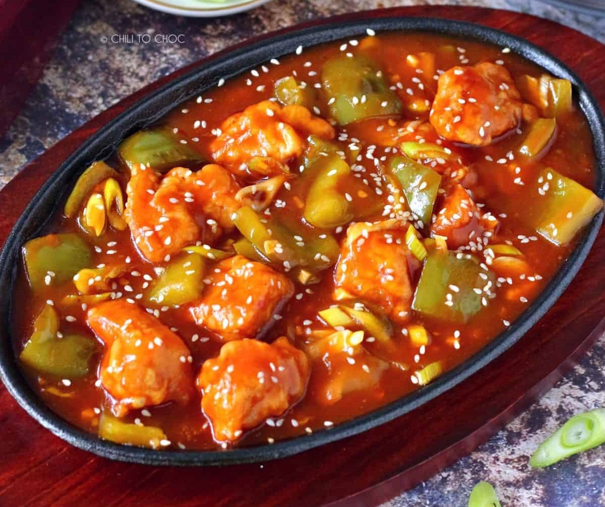

Chinese Food
Chow Mein

Chow mein is a dish of Chinese stir-fried noodles with vegetables and sometimes meat or tofu. Over the
centuries,
variations of chǎomiàn were developed in many regions of China; there are several methods of
frying the noodles and a range of toppings can be used.
Recipe:
Ingredients:
For the Chow Mein Sauce:
- 3 tablespoons soy sauce
- 2 tablespoons oyster sauce
- 1 tablespoon hoisin sauce
- 1 tablespoon dark soy sauce (optional, for color)
- 1 tablespoon rice vinegar or Chinese black vinegar
- 1 tablespoon brown sugar
- 1/2 cup chicken broth or water
- 1 teaspoon cornstarch
For the Chow Mein:
- 250g (about 9 oz) chow mein noodles or thin egg noodles
- 2 chicken breasts, thinly sliced
- 2 tablespoons vegetable oil, divided
- 3 cloves garlic, minced
- 1-inch piece of ginger, grated or minced
- 1 onion, thinly sliced
- 1 carrot, julienned
- 1 bell pepper (any color), thinly sliced
- 1 cup cabbage, shredded
- 1 cup bean sprouts
- 3-4 green onions, sliced diagonally
- Salt and pepper to taste
Instructions:
1. Prepare the Chow Mein Sauce:
- In a bowl, whisk together soy sauce, oyster sauce, hoisin sauce, dark soy sauce (if using), rice vinegar,
brown sugar, chicken broth (or water), and cornstarch until well combined. Set aside.
2. Cook the Noodles:
- Cook the chow mein noodles or egg noodles according to package instructions until al dente. Drain and rinse
with cold water to stop cooking. Toss with a little oil to prevent sticking and set aside.
3. Stir-fry the Chicken:
- Heat 1 tablespoon of vegetable oil in a large pan or wok over medium-high heat.
- Add the sliced chicken breast and stir-fry until it's cooked through and slightly browned. Remove the
chicken from the pan and set aside.
4. Stir-fry the Vegetables:
- In the same pan or wok, add another tablespoon of vegetable oil if needed.
- Add minced garlic and grated ginger, stir-frying for about 30 seconds until fragrant.
- Add sliced onion, julienned carrot, and thinly sliced bell pepper. Stir-fry for 2-3 minutes until the
vegetables are slightly tender but still crisp.
- Add shredded cabbage and bean sprouts. Stir-fry for another 1-2 minutes until the cabbage begins to wilt.
5. Combine Everything:
- Return the cooked chicken to the pan with the stir-fried vegetables.
- Pour the prepared chow mein sauce over the chicken and vegetables in the pan.
- Add the cooked noodles to the pan and gently toss everything together until well combined and heated
through.
- Season with salt and pepper to taste. Stir in sliced green onions.
6. Serve:
- Transfer the Chicken Chow Mein to serving plates or a large platter.
- Garnish with additional sliced green onions if desired.
- Serve hot and enjoy your homemade Chicken Chow Mein!
This recipe makes a generous portion of Chicken Chow Mein that is perfect for a family meal or gathering. Adjust
the vegetables and seasoning according to your taste preferences. Enjoy!
Chicken Manchurian

Chicken Manchurian is a popular Indo-Chinese dish that originated in the Indian subcontinent. It's made with
boneless chicken pieces that are usually deep-fried and then sautéed in a savory and tangy sauce.
The sauce typically includes ingredients like soy sauce, vinegar, garlic, ginger, and sometimes tomato ketchup
or chili sauce for added flavor.
It's often garnished with spring onions and served hot as a side dish or with fried rice or noodles.
Recipe:
Ingredients:
For the Chicken Balls:
- 500g boneless chicken, cut into small cubes
- 1 egg
- 3 tablespoons cornstarch
- 2 tablespoons all-purpose flour (maida)
- 1 teaspoon ginger-garlic paste
- 1/2 teaspoon black pepper powder
- Salt to taste
- Oil for deep frying
For the Manchurian Sauce:
- 1 tablespoon vegetable oil
- 3-4 garlic cloves, minced
- 1-inch piece of ginger, minced
- 2-3 green chilies, finely chopped (adjust to taste)
- 1 medium onion, finely chopped
- 1 medium bell pepper (capsicum), diced
- 2 tablespoons tomato ketchup
- 1 tablespoon soy sauce
- 1 tablespoon chili sauce (adjust to taste)
- 1 tablespoon vinegar
- 1 tablespoon cornstarch mixed with 1/4 cup water (for thickening)
- 1/2 teaspoon sugar (optional)
- Salt to taste
- Freshly ground black pepper, to taste
- Chopped spring onions for garnish (optional)
Instructions:
1. Prepare the Chicken Balls:
- In a bowl, combine boneless chicken cubes, egg, cornstarch, all-purpose flour, ginger-garlic paste, black
pepper powder, and salt. Mix well until the chicken pieces are coated evenly.
- Heat oil for deep frying in a wok or deep pan over medium-high heat.
- Once the oil is hot, carefully drop the coated chicken pieces into the oil, a few at a time, and fry until
they are golden brown and cooked through. Remove with a slotted spoon and drain on paper towels. Set aside.
2. Make the Manchurian Sauce:
- In a separate pan or wok, heat 1 tablespoon of vegetable oil over medium heat.
- Add minced garlic and ginger. Sauté for a minute until fragrant.
- Add chopped green chilies and finely chopped onions. Stir-fry until onions turn translucent.
- Add diced bell pepper (capsicum) and continue to stir-fry for another 2-3 minutes until bell pepper is
slightly tender but still crisp.
3. Prepare the Sauce:
- Add tomato ketchup, soy sauce, chili sauce, vinegar, sugar (if using), salt, and freshly ground black pepper
to the pan. Mix well and cook for a minute.
- Stir in the cornstarch-water mixture gradually while stirring continuously to avoid lumps.
- Cook the sauce until it thickens and becomes glossy. Adjust consistency with more water if needed.
4. Combine Chicken with Sauce:
- Add the fried chicken balls to the pan with the Manchurian sauce. Toss gently until the chicken balls are
coated evenly with the sauce.
- Cook for another 1-2 minutes, stirring gently, to allow the flavors to meld together.
5. Serve:
- Transfer Chicken Manchurian to a serving dish.
- Garnish with chopped spring onions (if using).
- Serve hot as a main dish with steamed rice or noodles.
Enjoy your homemade Chicken Manchurian with its delightful blend of flavors! Adjust the spice levels and sauces
according to your taste preferences for a perfect dish every time.